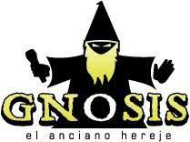

|  |
Gnosis "The Ancient Heretik"
Hip Hop Artist and Spiritual Teacher
From center of the universe, comes forth a spirtual emissary and chanel emited threw phonic frequency waves in the form of hip hop music. This energy is being transmitted with the humble purpose of opening up the infinite posiblilities in the lives of all humans that are entuned to the search of self love and acceptance on the planet in this day and age. The conduit for this transmission is a present human who answers to the name of Luis Martinez. Chosen by the spirit that drives his body he has taken this task on and is commited to achieving this amazing goal. Born in the dense mayan jungles of Guatemala in October of the year 1976, Luis has traveled threw out parts of central and north america touching as many lives as he encounters threw example or verbal agility. He has been involved in this mission since 1999 when he co-created The Living Mechanizm in Las Vegas Nevada, creating a type of hip hop considered way ahead of its time by those who have had the opportunity to listen to the words of wisdome sprung forth by a team of conscious individuals commited to informing and awakening its listeners. After 20 years of service to humanity in the underground hip hop genre Luis is back in the land of Mayab creating more powerful frequencies that are sure to hit the world by storm in the next few years. I hope that you are one of the chosen to partake of this enlightened hip hop blast!!
|